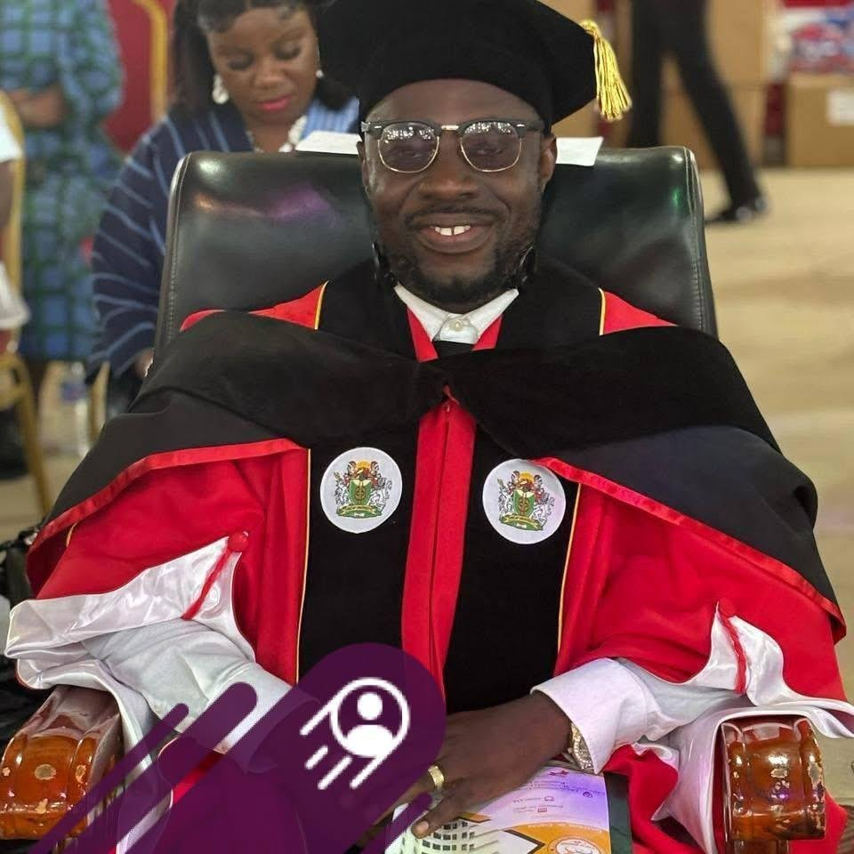

Speaker
Voices shaping Africa’s future
Leaders, diplomats, experts, and changemakers bringing experience and practical ideas to the continental conversation.
Featured speakers
Meet the confirmed voices helping guide dialogue on unity, investment, diplomacy, innovation, and shared prosperity.



Why attend
Be in the room
November 16–20, 2026 in Monrovia, Liberia.